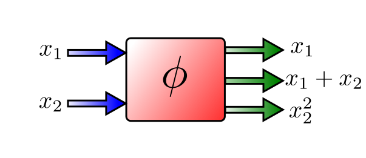
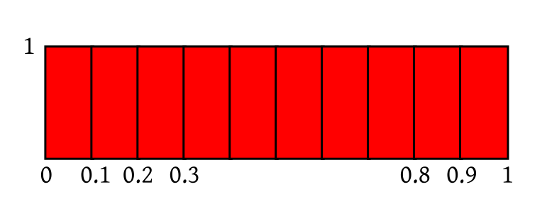
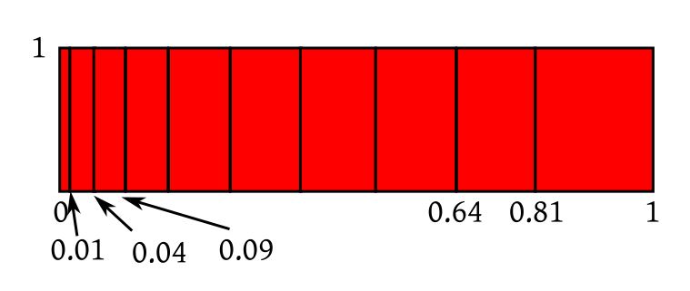
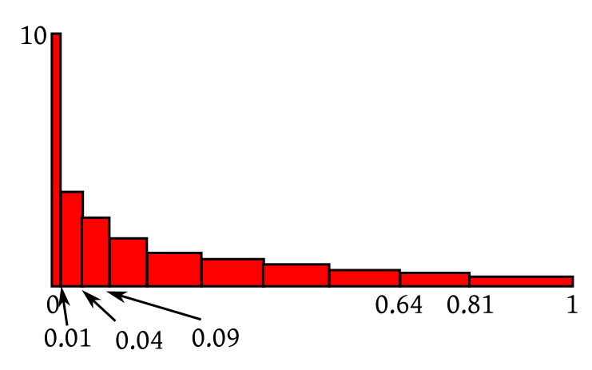
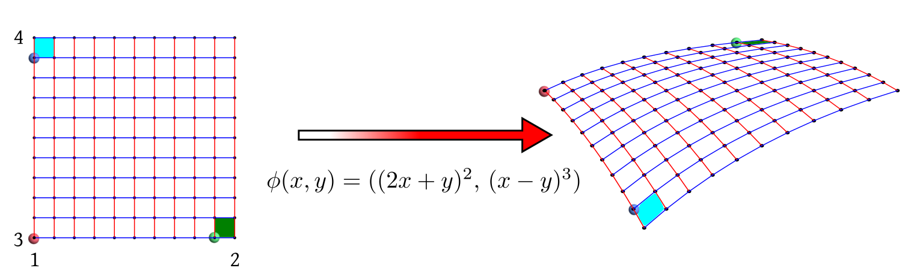
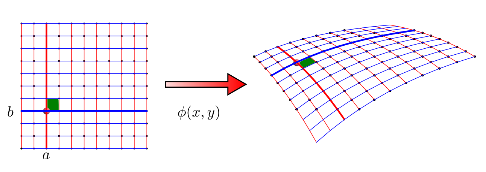
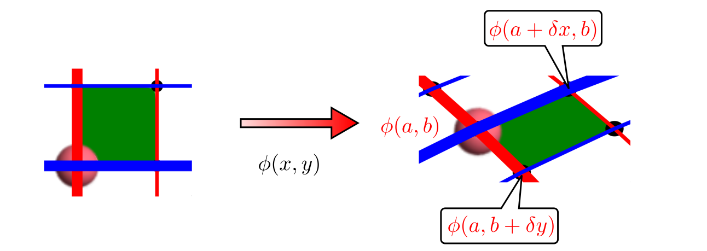
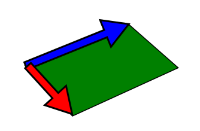

$\newcommand{\pd}[2]{\frac{\partial #1}{\partial #2}}$
$\newcommand{\x}[1]{X_{(#1)}}$
$\newcommand{\v}[1]{{\mathbf #1}}$
Transformation of random vectors
We often work with functions of random variables. Old random variables are transformed into new random variables using
functions.
So a natural requirement is to be able to work out the distributions of the new random variables
in terms of those of the old
ones. In Probability I, you have already learned about univariate transforms (i.e.,
from ${\mathbb R}$ to ${\mathbb R}$). Here we shall generalise them to multivariate transforms (i.e.,
from ${\mathbb R}^n$ to ${\mathbb R}^n$ and later from ${\mathbb R}^n$ to ${\mathbb R}^m$ where $m < n$). Let us start
by reviewing some basic concepts.
An $n$-dimensional random vector is just $n$ random variables packed together as a vector. All the random variables
must be defined on the same probability space.
EXAMPLE 1: Roll a fair die. Let the outcome be denoted by $\omega.$ Define the random variables
$X$ and $Y$ as
$X(\omega) = \omega$
$Y(\omega) = \omega+3$
Then $(X,Y)$ is a random vector.
■
EXAMPLE 2: Roll a fair die and a fair coin independently together. Let the outcome be denoted by
$\omega\equiv(\omega_1,\omega_2),$ where $\omega_1$ is the outcome of the die, and
$\omega_2$ is that of the coin.
When we say $\phi$ is a function from ${\mathbb R}^2$ to ${\mathbb R}^3,$ we think of $\phi$ as a machine with $2 $ inputs
and $3$ outputs. It takes $2 $ numbers in, and produces 3 numbers out.
EXAMPLE 3: $\phi(x_1,x_2) = (x_1,x_1+x_2,x_2^2)$ is one such example. It has two inputs and 3 outputs:

■
In general, each of the output numbers is a function of all the input numbers.
These are called the
component functions.
For example, our $\phi$ has component functions $\phi_1(x_1,x_2) = x_1,$ $\phi_2(x_1,x_2) = x_1+x_2$ and
$\phi_2(x_1,x_2) = x_2^2.$
Note that, as in the case of the first and third components, not all the input variables
need to appear explicitly in all the components.
EXERCISE 1: How many component functions does $\phi:{\mathbb R}^6\rightarrow{\mathbb R}^2$ have? $6?$ or $2?$
Let $\phi:{\mathbb R}^n\rightarrow{\mathbb R}^m$ be a function with $i$-th component function denoted by
$\phi_i(x_1,...,x_n).$ Assume that $\pd {\phi_i}{x_j}$ is defined for all $i,j.$
Then the Jacobian matrix of $\phi$ is defined as the $m\times n$ matrix with $(i,j)$-th entry
$$\pd{\phi_i}{x_j}.$$
EXAMPLE 4: Find Jacobian of $\phi(x_1,x_2) = (x_1,x_1+x_2,x_1^2)$
SOLUTION:
The Jacobian is going to be a $3\times 2 $ matrix:
$$\left[\begin{array}{ccccccccccc}1 & 0\\1 & 1\\2x_1 & 0
\end{array}\right].$$
■
Here $\phi$ is assumed to be strictly monotone and differentiable. Actually, we also need
$\phi ^{-1}$ to be differentiable. The strict monotonicity guaranteed that $\phi$ was one-one, so that $\phi ^{-1}$
made sense.
In higher dimensions, we want to have $\phi:{\mathbb R}^n\rightarrow{\mathbb R}^n.$ Now, if $n\geq 2,$ then
we do not have the concept of
monotonicity (since there is no natural
ordering in ${\mathbb R}^n$ for $n\geq 2$).
So, to generalise to higher dimensions, we shall drop the strict monotonicity condition and
explicitly require
$\phi$ to be one-one with
differentiable $\phi ^{-1}.$
Next we need to know two things:
How to define differentiability for functions from ${\mathbb R}^n$ to ${\mathbb R}^n.$
how to compute the derivative (Jacobian) of such a function.
You should know both of these from your Mathematics II course. Here I have put together a quick refresher.
The refresher is also provided in the
first 8 minutes of this video.
We shall imitate our familiar univariate Jacobian formula
$$g(y) = f(\phi ^{-1}(y)) \left| \frac{d}{dy}\phi ^{-1}(y) \right|$$
to get the following theorem.
We shall not prove this theorem here. This is actually just a restatement of the change of variable formula for multivariate
integration that you have learned in Mathematics II.
Let us digest the theorem with an example.
EXAMPLE 5:
Let $\v X = (X_1,X_2)$ be uniformly distributed over $[1,2]\times[3,4].$ Let $Y_1 =
X_1X_2$ and $Y_2 = X_1.$ Find the joint
density of $\v Y = (Y_1,Y_2).$
SOLUTION:
Let $S = [1,2]\times[3,4].$
Here the transform is $\phi(x_1,x_2) = (x_1x_2,x_1).$
Clearly, $\phi:S\rightarrow \phi(S)$ is a bijection, because given $y_1=x_1x_2$ and $y_2=x_1$ you can recover $(x_1,x_2)\in[1,2]\times[3,4]$
uniquely.
The inverse transform is $\phi ^{-1}(y_1,y_2) = \left(y_2,\frac{y_1}{y_2}\right).$
The Jacobian of this is
$$\left[\begin{array}{ccccccccccc}0 & 1\\\frac{1}{y_2} & -\frac{y_1}{y_2^2}
\end{array}\right],$$
which has absolute determinant $\frac{1}{y_2},$ since $y_2 > 0.$
So the required density will be
$$g(y_1,y_2) = \left\{\begin{array}{ll}\frac{1}{y_2}&\text{if }\left(y_2,\frac{y_1}{y_2}\right)\in S\\ 0&\text{otherwise.}\end{array}\right.$$
Often we want to write it as
$$g(y_1,y_2) = \left\{\begin{array}{ll}\frac{1}{y_2}&\text{if }(y_1,y_2)\in T\\ 0&\text{otherwise.}\end{array}\right.$$
for some suitably defined $T.$ This may be done as follows.
$\left(y_2,\frac{y_1}{y_2}\right)\in S$ means
$$1\leq y_2 \leq 2 \mbox{ and } 3\leq \frac{y_1}{y_2}\leq 4.$$
Sketching these restrictions we get this region:
EXERCISE 2: If $(X,Y)$ has joint density $f(x)=\left\{\begin{array}{ll}x+y&\text{if }x,y\in[0,1]\\ 0&\text{otherwise.}\end{array}\right.$,
then find the joint density of $(X+Y, X-Y).$
EXERCISE 3: If $(X,Y)$ is uniformly distributed over $[0,1]\times[0,2]$, then find the joint density of $(X^2,X+Y).$
EXERCISE 4: If $(X,Y)$ is uniformly distributed over the red rectangle below, then find
non-zero constants $a,b,c,d$ such that $U=aX+bY$ and $V=cX+dY$ are independent.
If our transformation is $\phi:{\mathbb R}^n\rightarrow{\mathbb R}^n$ is of the form $\phi(\v x) = A\v x + \v b,$ where $A_{n\times n}$
is a fixed matrix, and $\v b$ is a fixed vector, then $\phi$ is a a bijection if any only if $A$ is nonsingular.
In this case, the Jacobian of $ \phi ^{-1}$ is $A ^{-1}.$ So, if the density of $\v X$ is $f(\v x),$
then density of $\v Y$ is $g(\v y) = \frac{1}{|A|} f( A ^{-1} (\v x - \v b)).$
So far we have been talking only about trasnformas from ${\mathbb R}^n$ to ${\mathbb R}^n.$ What if we have a transform $\phi:{\mathbb R}^n\rightarrow{\mathbb R}^m,$
where $m\neq n?$
If $m > n,$ then it can be shown (with help from measure theory beyond the present scope) that $\phi(\v X)$ cannot
have a density even if $\v X$ has. So we shall not discuss this case here.
But, it is quite common to have the $m < n$ case. In this case, the Jacobian formula is not applicable directly. However,
we can "pad up" $\phi$ to make the codomain equal to ${\mathbb R}^n$ keeping the padded function bijective. Here is
an example.
EXAMPLE 6: We are given the joint density of $(X,Y)$ and want to find the joint density of
$2X+3Y.$ How can you "pad it up" and use the Jacobian formula?
SOLUTION:
Here the function is $\phi(x,y) = 2x+3y.$ Since the codomain is ${\mathbb R},$ we make it
${\mathbb R}^2$ by padding it with another
function of our choice, say $\xi(x,y) = x.$ Then the padded function is $(x,y)\mapsto (2x+3y,x).$ This is a
bijective function from ${\mathbb R}^2$ to ${\mathbb R}^2.$ So we can let $V = X,$ and find the joint density of
$(U,V)$ from that of $(X,Y)$ using the Jacobian formula. Then we can integrate out $V$ to find the marginal
density of $U.$
■
In order to generalise this to the multivariate case, we need to understand the
geometric interpretation of this univariate formula.
Let's first massage the above formula into a form more useful for the present purpose:
$$g(y) = f(x) \left| \frac{dx}{dy} \right|,$$
or
$$g(y) = \frac{f(x)}{ | \phi'(x)| }.$$
So we may say that $g$ is just same as $f,$ except that it is scaled by $\phi'.$
When we view it in this way, a geometric interpretation becomes immediate.
Suppose that $X$ has uniform distribution over $[0,1].$
Consider the density of $X.$ Imagine 10 equal length subintervals along $[0,1].$ Since the total
area under the density is 1, the rectangle on each subinterval has area $\frac{1}{10}.$ You may
say that each subinterval accounts for $\frac{1}{10}$ mass.

All the rectangles are identical
When you compute $Y=X^2,$ the intervals close to 0 get squeezed further down to 0,
while those closer to 1 are stretched.

Rectangles are squeezed and stretched
But still each rectangle has to account for $\frac{1}{10}$ mass. So the squeezed rectangles have
to compensate by growing taller,
while the stretched ones compensate by getting shorter.

All rectangles now again have area $\frac{1}{10}.$
This
leads to $Y$ having higher density near 0 than near 1. Thus, the non-uniformity of the density is controlled by the
squeezing of the transforming function, i.e., the derivative. Smaller the derivative, higher the density. And, that is precisely
what we achieve when we divide by $|\phi'(x)|.$ We use the absolute value, because we care about only the
amount of stretching or squishing, not the direction.
EXERCISE 5:
If $X$ has uniform distribution over (2,4)
then roughly sketch the density of $Y = \frac 1X.$ Don't apply the Jacobian formula
algeraically. Think in terms of which part
gets squeezed/expanded.
EXERCISE 6: Suppose that $X$ is uniform over $(-1,1)$ and $Y=X^2.$ (not a bijection!).
Guess the form of the density of $Y.$ Do you see why we needed the transform to be bijective in our intuition?
We were assuming that density of $Y$ at any given point was controlled by the density
of $X$ at only one point. But in this example, the density of $Y$ at, say,
$y=\frac 14$ is governed by the density of $X$ at $x=\frac 12$ as well as $x=-\frac 12.$
First let us understand how a function from ${\mathbb R}^2$ to ${\mathbb R}^2$ may be visualised graphically.

A transform from ${\mathbb R}^2$ to ${\mathbb R}^2$
The above picture shows the effect of the function $\phi(x_1,x_2)=\big( (2x_1+x_2)^2,\, (x_1-x_2)^3\big)$
on the rectangle $[1,2]\times[3,4].$ Notice how the square grid has been deformed unevenly. The diagram also shows
the positions of three points (red, green and blue) before and after the transform. The green and
blue squares were of equal area originally. But after the transform blue region has much larger
area than the green one.
We want to measure which square will grow and which square will be squeezed. For this we consider
some point $(a,b)$ in the domain, and a little square $[a,a+\delta x]\times[b , b+ \delta y].$

Notice how the little green square changes
Let us zoom in upon the little square (before and after the transformation):

A closer look
If the two components of $\phi(x,y)$ are called $u(x,y)$ and $v(x,y),$ then
$$\begin{eqnarray*}
\phi(a, b) & = & (u(a, b), v(a, b)),\\
\phi(a+\delta x, b) & = & (u(a+\delta, b), v(a+\delta, b))\approx
\left(u(a,b)+\pd u x\delta, v(a,b)+\pd v x \delta\right)\\
\phi(a, b+\delta y) & = & (u(a, b+\delta x), v(a, b+\delta))\approx \left(u(a,b)+\pd u y \delta, v(a,b)+\pd v
y \delta\right).
\end{eqnarray*}$$
So after the transform, the little green square is approximately the following parallelogram:

A parallelogram
The blue edge is given by the vector $\left(\pd u x, \pd v x \right)\delta,$ and red side by the vector
$\left(\pd u y, \pd v y \right)\delta.$
Now, it is known that the area of a parallelogram with sides given by $(a,b)$ and
$(c,d)$ is $\left|\det\left[\begin{array}{ccccccccccc}a & c\\b & d
\end{array}\right]\right|.$
Hence the area of the green parallelogram is
$$\left| \det\left[\begin{array}{ccccccccccc}\pd u x & \pd u y\\\pd v x & \pd v y
\end{array}\right]\right| \delta^2,$$
evaluated at $(a,b).$ Since the original green square had area $\delta^2,$ hence the scaling factor is given
by the absolute determinant of the Jacobian.
into the curve of $\phi(a,y)$ and blue line changes into the curve of $\phi(x,b).$
When $x$ increases from $a$ to $a+\delta x,$ the corresponding change in
$\phi(x,b)$ is from $\phi(a,b)$ to
EXAMPLE 7:
Let $f:{\mathbb R}^2\rightarrow{\mathbb R}^2$ be $f(x_1,x_2) = (\sin (x_1x_2),\, x_1-x_2^2).$ Find its Jacobian. Also find the determinant
of the Jacobian.
SOLUTION:
Note that $f$ consists of two function $f_1,f_2:{\mathbb R}^2,\rightarrow{\mathbb R}.$ These are its component functions,
$f_1(x_1,x_2) = \sin(x_1x_2)$ and $f_2(x_1,x_2) = x_1-x_2^2.$
The Jacobian is a $2\times 2$ matrix with $(i,j)$-th entry $\frac{\partial f_i}{\partial x_j}.$ Note that each
row is devoted to a single $f_i$ and each column to a single $x_j.$ In general, if we had $f:{\mathbb R}^n\rightarrow{\mathbb R}^m$
the matrix would have been $m\times n.$
In our case
$$\begin{eqnarray*}
\frac{\partial f_1}{\partial x_1} & = & x_2\cos (x_1x_2),\\
\frac{\partial f_1}{\partial x_2} & = & x_1\cos (x_1x_2),\\
\frac{\partial f_2}{\partial x_1} & = & 1\\
\frac{\partial f_2}{\partial x_2} & = & -2x_2.
\end{eqnarray*}$$
So the Jacobian is
$$\left[\begin{array}{ccccccccccc}x_2\cos (x_1x_2) & x_1\cos (x_1x_2)\\ 1 & -2x_2
\end{array}\right].$$
Its determinant is
$$x_2\cos (x_1x_2)\times(-2x_2)- x_1\cos (x_1x_2)\times 1 = -(2x_2^2+x_1)\cos (x_1x_2).$$
■
If all this looks like unmotivated magic, you might benefit from
this introductory video
that I have made for Jacobians. The video is about 21 min long, which is too long for my taste. You may like to navigate
to relevant portions of it using the following guideline:
0:00: Casting univariate
differentiation into a form suitable for generalisation.
4:31: Differentiation of $f:{\mathbb R}^n\rightarrow{\mathbb R}^m$
8:34: Geometric
interpretation of Jacobian matrices
EXERCISE 7: Compute the Jacobian matrix for $\phi(x,y) = (x+y,x-y).$
EXERCISE 8: What is the Jacobian matrix for the transform $\phi:{\mathbb R}^n\rightarrow{\mathbb R}^n$ where $\phi(\v x) = A\v
x+\v b$ for some matrix $A_{n\times n}$ and vector $\v b_{n\times 1}$?